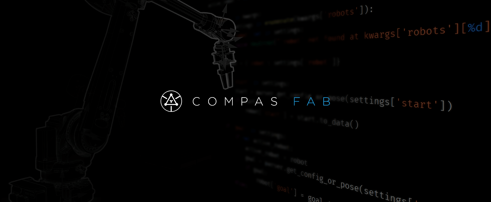

Robotic Fabrication for COMPAS
Robotic fabrication package for the COMPAS Framework facilitating the planning and execution of robotic fabrication processes. It provides interfaces to existing software libraries and tools available in the field of robotics (e.g. OMPL, ROS) and makes them accessible from within the parametric design environment. The package builds upon COMPAS, an open-source Python-based framework for collaboration and research in architecture, engineering and digital fabrication.
Contents
- Overview
- Getting started
- Working with backends
- Examples
- 1. Fundamentals
- 2. Description Models
- 3. Backends: ROS
- 3.1. Using ROS
- 3.2. Forward and inverse kinematics
- 3.3. Planning scene and collision objects
- 3.4. Plan motion
- 3.5. Full examples
- 3.6. Creating a URDF with an UR5 robot and a custom end-effector
- 3.7. Creating a MoveIt! package from the custom created URDF
- 3.8. Creating a URDF of the UR10 on two linear axes
- 4. Backends: V-REP
- API Reference
- Contributor’s Guide
- Citing
- Changelog
- License